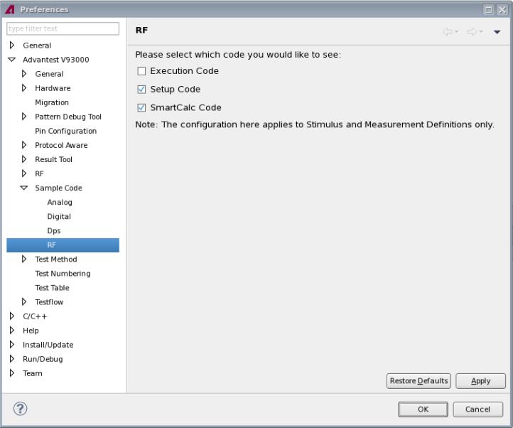

RF preference page
The preference page allows you to specify which code of RF definition is displayed in the Sample Code view when the hardware information of RF definition is converted to the test method code.
The following displays the RF preference page.

Functional changes
- Introduced in SmarTest 6.5.2
- SmarTest 7.2.1: Added SmartCalc Code selection.